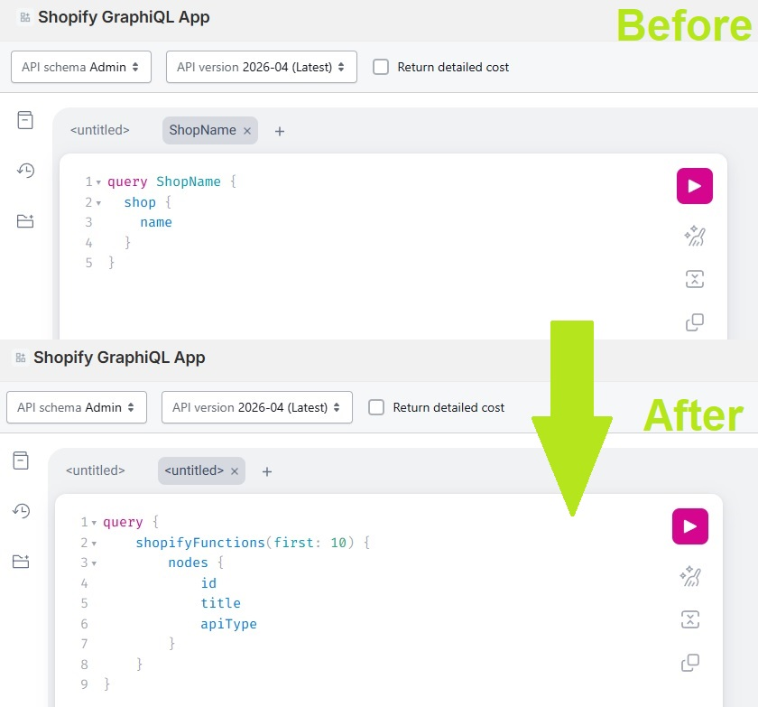
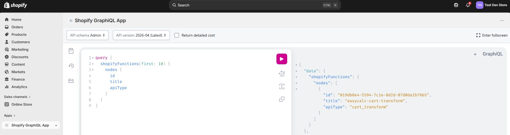
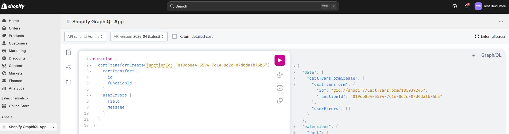

Merchant Setup Instructions
1. CartTransform Activation
This step is required to give the easycalc app access to the cart for price calculation.
Install the Shopify GraphiQL App:
- Go to https://shopify-graphiql-app.shopifycloud.com/login.
- Check both "cart_transforms" checkboxes, read and
write (near the top left).
- In the "Shop URL" field, enter "makersuppliesau" (near the top)
- Click "Install" (near the top).
- You should be automatically redirected you to your store, to confirm data access - click
"Install".
- You should be automatically redirected to the Shopify GraphiQL App interface.
Run Shopify GraphQL queries to activate cart transform permissions for your store:
- In the text area that currently has "query ShopName {...}" in it (top left of the app
interface area),
enter the following (replacing all existing text):
query {
shopifyFunctions(first: 10) {
nodes {
id
title
apiType
}
}
}

- Run this query using the pink "Play"
button in the center top of the app
page.
- in the results on the right, note the "id" of the shopify function with the name
"easycalc-cart-transform", it should look something like this:
{
"id": "019db8e4-5594-7c1e-8d2d-07d0da1b76b5", <-- copy this id
"title": "easycalc-cart-transform",
"apiType": "cart_transform"
}

- In the text area that currently has the query text you just entered (top left of the app
interface area),
enter the following (Replace "FUNCTION-ID-GOES-HERE" with the id you copied from the last
step, including quotation marks)
(replacing all previous text from the last step):
mutation {
cartTransformCreate(functionId: "FUNCTION-ID-GOES-HERE") {
cartTransform {
id
functionId
}
userErrors {
field
message
}
}
}
- Again, run this query using the pink "Play" button in the center top of the app page.
- The result should resemble the following, with no errors:
{
"data": {
"cartTransformCreate": {
"cartTransform": {
"id": "gid://shopify/CartTransform/105906477",
"functionId": "019db8e4-5594-7c1e-8d2d-07d0da1b76b5"
},
"userErrors": []
}
},
....

2. Metafields
This step creates metafields that allow the merchant to configure various calculation parameters.
Add Required Product meta fields:
- (Go to "Settings" down the bottom left, click on "Metafields and metaobjects" in the lower
left)
- Click on "Products" metafields
- Add the following 6 Product Metafield Definitions, saving after each one:
Name: Min cut sheet size
Type: Integer
Description: Minimum cut length and width in mm for sheet/plate materials.
Name: Max cut sheet size
Type: Integer
Description: Maximum cut length and width in mm for sheet/plate materials.
Name: Weight Rounding To Nearest Grams Value
Type: Weight
Description: Nearest weight to round material weights to, eg: 500g.
Name: Cut Allowance (cm)
Type: Decimal
Description: Additional cut allowance added to sheet dimensions for pricing.
Name: Price per kg
Type: Money
Description: Material price per kilogram that the customer should be charged.
Name: Material Density (g/cm³)
Type: Decimal
Description: Material Density for use in sheet/plate material weight calculation. In grams per
cubic centimeter.
Add required variant meta fields:
- Go back to the "Metafields and metaobjects" page (not the "Products metafield definitions"
page)
- In the "Metafield definition" menu, click "Variants"
- Add the following 2 Variant Metafield Definitions, saving after each one:
Name: Variant Markup Percentage
Type: Decimal
Description: The markup added to the total sheet stock price as a percentage.
Name: Cut Surcharge
Type: Money
Description: The per line item cut surcharge for sheet/plate metal stock.
3. Products
This step demonstrates how to create products with necessary fields for price calculation.
Add a new product:
- call it "Aluminium plate test".
- Set it's status to "Unlisted" (top right)
- Set it's "Type" to "Sheet Stock" (center right)
- Add a variant option to "Variants", call it "Thickness"
- Add at-least 2 variants, the variants must be named by material thickness, Eg: 5mm and
7.5mm
- The variant price does not matter as it will be calculated at time of purchase,
- but can be displayed as "priced from $x" to the customer, so for now you can set it to $1.
- Down the bottom of the page, there should be a "Product metafields" section, add the
following:
- min cut sheet size: 50
- max cut sheet size: 1000
- weight rounding to nearest grams value: 500
- cut allowance (cm): 2.0
- price per kg: 12.00
- material density (g/cm³): 2.7
- Click save
- Update each of the variants, click on each in turn and add the following:
- sufficient stock for testing if necessary
- In "Metafields", for both variants, add:
Variant Markup Percentage: 3.0
Cut Surcharge: 10
4. UI Template
This step demonstrates how to set up the customer UI template for product price calculation.
Add a template including the app ui
- On the left, under "Sales channels", click on "Online Store" (don't click the eye)
- This should open the Themes page, Under current theme, click "Edit theme"
- This should open an example homepage, up the center top, there should be a drop down that
currently displays the text "Home Page"
- Open the "Home page" drop down, mouse over and click "Products", you will need to create a
new template called "Sheet Stock".
- While creating the "Sheet Stock" template, on the left, under "Template", expand the
"Product information" (if necessary) and click "Add block"
- In the blocks menu, there should be an option called "Apps", click on it to open.
- Under "Apps" in the blocks menu, there should be the "Material Calculator" or "easycalc"
app, click it.
- Once it's added, it should appear on the page and on the "Product information" tab of the
"Template" section on the left, drag it just below title.
- Hide the default "Buy buttons" at the bottom of the "Product information" section under
"Template", as the default 'buy' behavior isn't being used.
- Click save up the top right.
5. Validation
Verify everything has worked.
- As the new sheet material should be unlisted, go back to "Products", find "Aluminium Plate
test" and click the "eye" at the far right of the row.
- This should open the product page along with the new material price calculation app ui.
- Save the URL and share it stake-holders for testing.
6. Finally
Customize and add more products as needed.
Once you are comfortable, you can add more products with different metafield values, for example,
different cut surcharges or markup percentages.
Uninstallation
Instructions